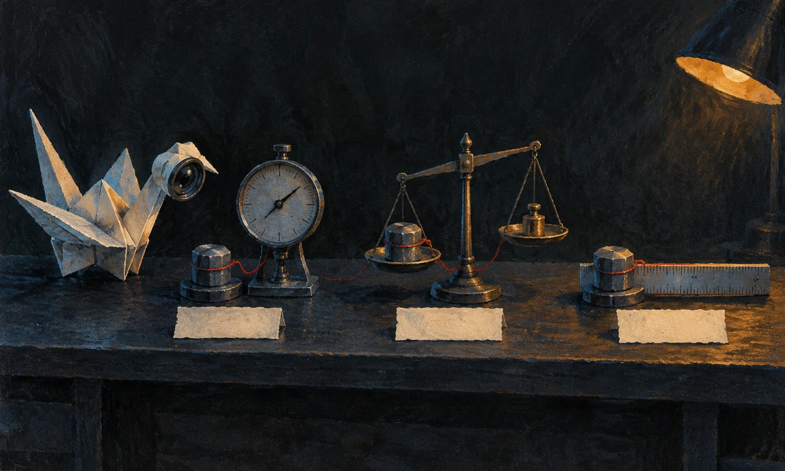
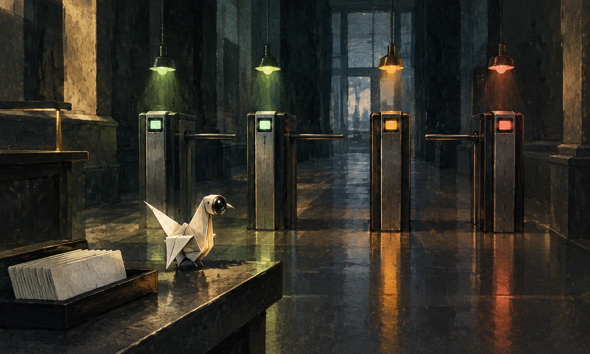

单次分数是噪声
模型评测可以固定种子；Agent 评测连「同一条输入」都很难复现。一次跑分，只是一个样本。
先把一个常见的误解拆掉：Agent 的评测不是「给模型考试」。考试的前提是题目、答案、评分标准都不变，考生每次作答只影响分数；而 Agent 的一次运行里，题目会被它自己改写——它先下载视频、选字幕或转写、决定看哪几帧、分几段、用哪个渠道、缓存命中与否，最后才写出报告。任何一步不同，输出的报告就不同。
SeeFlow 的一条流水线有九个阶段：识别平台、建立文字轨、获取媒体、准备音轨、测量节奏、画面取证、总结、校验、渲染。每个阶段都有独立的失败模式：平台改版、字幕缺失、whisper 模型版本、视觉端点超时、渠道 429、缓存键失效、审核预算耗尽……其中任何一个都可能让最终分数变化，而它们和「模型聪不聪明」没有关系。
同一条视频，两次运行可能不是同一道题
举一个真实的状态差：那条 4 小时视频的 101 个分段里，94 段的归并结果来自 map 缓存、只有 7 段是现算的。输入一样，但计算路径不一样：缓存命中意味着模型看不到这些分段，只看到上次的结论。如果缓存键设计得不够严（比如只按视频 URL 做键），一次模型升级后的重跑会静默复用旧模型的结果——分数没变，但你已经不是在测新模型了。
SeeFlow 的缓存键把「分段内容 + prompt + system + 后端身份（base_url / key / model / role / api_format）+ 所有 ASR 不确定标注」一起哈希。换模型、换提示词、换渠道、甚至转写里的低置信词变了，缓存都会失效。这不是性能优化，是实验条件的一部分：缓存让同一条件重跑变快，但不允许换了条件还复用旧结果。
第一道守卫：拒绝给降级报告打分
评测设施最先要防的不是模型，是把无效样本算进分母。SeeFlow 的 eval/run.py 里有一段很短的守卫：如果预测条目为 0、且报告开头写着「降级版」，直接退出，不评分。原因很直白：降级报告是模型端点全挂时的兜底产物，它证明的是「系统没空手而归」，不是「模型答得好」。把它算进命中率，等于用一次停电阻断的考试去评价学生。
n_pred = sum(len(result.get(k) or []) for k in ("key_points", "sections", "macguffins", "decisions", "quotes")) if n_pred == 0 and md.exists() and "降级版" in md.read_text(encoding="utf-8")[:400]: raise SystemExit("[eval] 任务 ... 是降级报告（模型端点故障），评测无效。")
这段守卫在第一次真实跑批时就救了一次场：2026 年 9 月 10 日，21 次调用失败 18 次，产出降级报告。评测器拒绝评分并退出——如果它当时「宽容」一点，数据库里会多一条 0% 的记录，而那条记录会被后来的人当成「模型不行」的证据。评测的第一职责不是算分，是判断这次运行配不配被算分。
确定性夹具测的是合同，不是波动
仓库里还有一套 12 份材料、120 条断言的基线（eval/quality_baseline.py），用模拟模型跑冷缓存、热缓存、重启重放与渠道失败四种场景。它连续跑了 9 次，四个聚合数字完全一致：正向命中率 92.42%、数字保留率 57.02%、负向泄漏 0/22。
这份「稳定」不是系统稳定的证明，而是夹具确定性的证明：模拟模型每次都按同一张表回答，缓存与重放也走同一条路径。它验证的是管线合同——断言有没有被带进报告、失败样本有没有留在分母、账本调用数对不对。它验证不了真实模型今天会不会抽风、渠道会不会 429、同一提示词两次采样会不会不同。把这两类测试混在一起，是评测里最常见的自欺。
那么，一份真实输出到底能被量成什么样？下一章把四个指标拆开，你会看到同一份基线可以合法地算出五个不同的「命中率」——差别全在分子分母。
指标的解剖
一个分数至少有三个东西：分子、分母、以及你决定把谁放进分母。三个都能合法地变。
评测报告里最常见的写法是「命中率 92.4%」。这句话几乎总是缺了半句：在什么分母上。SeeFlow 的夹具基线里，同一批 12 份材料、120 条断言，可以合法地算出四个正向命中率，以及两个数字保留率。它们都不是造假，差别只在「把哪些样本算进来」。
| 口径 | 算法 | 结果 | 它回答的问题 |
|---|---|---|---|
| 材料均值 | 11 份成功材料的命中率取平均 | 92.42% | 「一份典型材料」有多好 |
| 剔除压力样本 | 去掉 FloodModel 的 m04，Σ命中 / Σ断言 | 91.09% | 「正常材料」有多好 |
| 断言加权 | Σ命中 / Σ断言（仅成功材料，111 条） | 85.74% | 「一条典型断言」有多容易被覆盖 |
| 全请求分母 | Σ命中 / 全部 120 条（含失败渠道 m07） | 79.31% | 「发出去的每一次请求」的期望 |
从 92.4% 到 79.3%，中间差了 13 个百分点，全部来自「m04 这个故意失控的压力样本算不算」和「m07 这个渠道失败的样本算不算」。这两种算法都有道理：产品经理关心「用户拿到的报告有多好」，应该剔除失败样本；SRE 关心「一次请求的成功期望」，必须把失败算进去。错的是只报一个数，不说口径。
数字保留率更典型。聚合代码写的是 round(sum(r["generation"]["numeric_retention"] or 0 for r in scored) / len(scored), 4)——注意那个 or 0。四份「纯音频 / 无字幕」材料没有数字断言，numeric_retention 是 None，于是被当成 0 分计入分母。结果是：
这不是说 57.02% 错了。它回答的是「如果随机抽一份材料，它的数字保留期望是多少」，把「没有数字可保留」算作 0 是一种保守口径。但如果标题只写「数字保留率仅 57%」，读者会以为模型丢了一半数字——而它实际丢掉的是 0.27 的那一份压力样本。
这件事的教训不是「选一个正确口径」，而是：每个指标都要带三个附件——分子、分母、以及分母为什么长这样。 一个没有分母说明的百分比，和一句「效果很好」没有区别。

四个指标，四种盲区
SeeFlow 的金标准评测用四个指标。它们不是四个角度，是四种不同的盲区：
| 指标 | 定义 | 它抓什么 | 它抓不到什么 |
|---|---|---|---|
| 要点命中率 | 19 条金标准里，有多少条在 ±15s 内、且 bigram ≥0.25 被预测覆盖 | 内容覆盖面 | 同义改写、语序重排、以及「说了但说错」 |
| 时间误差中位 | 命中对的 |Δt| 中位数 | 跳转体验 | 没命中的条目（它们连误差都没有） |
| 幻觉率 | 预测断言在 ±15s 窗口里找不到文本支撑的比例 | 编造与张冠李戴 | 真实但只存在于画面里的事实 |
| 视觉增益 | 4 条「只有看画面才能写对」的命中数 | 视觉能力是否真的生效 | 视觉之外的画面价值 |
那次 18 分钟实跑的结果：命中 3/19，命中对的时间误差中位 13.0 秒，幻觉率 1/14 = 7.14%，视觉增益 0/4。四个数字放在一起，故事才完整：覆盖面很低（3/19），但说出来的东西基本有依据（幻觉 7%），而画面理解这次完全缺席（0/4）。单看任何一个都会误判。
别把「平均」当成「典型」
材料均值 92.42% 看着漂亮，但它是 11 个数的算术平均，其中 10 个是 100%、1 个是 16.67%。换成断言加权就掉到 85.74%，因为 m04 一个样本就占了 19 条断言（16%），而它的命中只有 3 条。平均值的稳定性，取决于你有没有让一个极端样本掌握足够多的权重。
这也是为什么长视频评测要特别小心：一条 4 小时视频切 101 段，如果按「材料均值」算，它只是 1 份材料；如果按「断言加权」算，它可能占整个评测集一半的权重。同一套数字，换一个聚合层级，结论可能反过来。SeeFlow 目前只有一条真实长视频用例，所以任何「长视频能力」的结论都只能当假设看——第 3 章会讲这个样本量问题。
下一章先解决最上游的问题：金标准本身是怎么来的，以及 19 条到底能支撑多细的结论。
金标准与置信区间
19 条金标准能告诉你「大概在哪个区间」，不能告诉你「比上周高了 3 个百分点」。
SeeFlow 的唯一真实金标准用例，是那条 18 分钟的影视飓风颁奖片。做法很笨：一个人把原始 whisper 字幕从头读到尾，独立标出 19 条要点；再把「只有看画面才能写对」的 4 条单独标成视觉点。标注时不参考任何管线输出，ASR 的错字（「影视剧风」「加能」「CLOCK 3」）在金标准里改正——因为金标准考的是内容，不是谁的转写更准。
这份标注有三个刻意的设计，值得逐条说：
- 独立标注。金标准不能由被测系统参与生成，否则就是自证。标注者只拿原始字幕和视频，不看报告。
- 改写正确写法。「加能」改「佳能」，「CLOCK 3」改「C-Log 3」。这会让「照抄转写」的系统得低分，让「理解后改写」的系统得高分——是故意的。
- 视觉点单列。4 条视觉点不混进 19 条总分，单独构成「视觉增益」的分母。否则视觉能力会被字幕能力稀释（详见第 2 章的四个指标）。
19 条能说明什么：一个区间，不是一个点
3/19 = 15.8%。这个数字本身没有意义，除非你把它放进抽样误差里。对于二项分布的小样本，常用的 95% 置信区间是 Wilson 区间：
为什么不用最简单的 p ± 1.96·√(p(1−p)/n)？因为在小样本、极端比例（0 或 1）时它会算出负数或超过 1 的区间。Wilson 区间在 n=19、k=3 时给出 [5.5%, 37.6%]，仍然很宽，但至少不会越界。
| 观测 | 点估计 | 95% Wilson 区间 | 这个区间意味着 |
|---|---|---|---|
| 3 / 19 | 15.8% | 5.5% – 37.6% | 「真实能力」可能在 6% 到 38% 之间 |
| 5 / 19 | 26.3% | 11.8% – 48.8% | 换一个判分器，区间整体右移但仍重叠 |
| 15 / 19 | 78.9% | 56.7% – 91.5% | 看起来很好，但仍可能与 60% 的系统无法区分 |
换句话说：3/19 和 5/19 的区间大幅重叠，你不能说「换判分器后提升了 10 个百分点」；15/19 和 12/19 也可能重叠，你不能说「这版比上版好」。 19 条金标准的分辨率，大概只够区分「基本不会」和「基本都会」，不够区分「70 分」和「80 分」。
要多少条才够？如果目标是把 95% 区间的半宽压到 ±10 个百分点，在 p≈0.8 时需要约 62 条；如果要在 80% 统计功效下区分 70% 与 80% 两个系统，每组需要约 295 条。SeeFlow 现在有 19 条，差了整整一个数量级。这不是懒惰，是标注成本：一条 18 分钟视频标 19 条要花几个小时，而 295 条意味着十几条视频、几十个小时的人工——这还没算标注者之间的一致性检验。
标注者只有一个人
还有一个没解决的问题：这份金标准只有一个标注者，没有算标注者间一致性（inter-annotator agreement）。同一条「最佳外观奖」到底算不算「要点」、参数要不要拆成多条，换一个人可能标出 16 条或 23 条。没有第二个人独立标注，就无法区分「系统漏了」和「标注者的口味不同」。
这是当前评测设施的真实缺口，不应该被「19 条金标准」这个说法掩盖。改进方向很清楚：再找一个人独立标同一份，算 Cohen's κ；低于 0.7 就先修标注规范，而不是急着跑模型。但这需要另一个人的时间，不是代码能解决的。
下面这枚小样把置信区间画出来。拖金标准条数和命中数，看区间怎么变；再切换两个系统，看它们的区间是否重叠——重叠的时候，任何「A 比 B 好」的结论都不成立。
区间用 Wilson 95%；「可区分」只表示两个 95% 区间不重叠，是保守近似，不是正式显著性检验。
判分器也要被评测
同一份输出，逐字判 0 分，时间窗判 5 分，bigram 判 3 分。尺子本身也是被测对象。
评测最容易被忽略的一层，是「判分」本身。大家都盯着被测系统，却默认尺子是准的。可尺子有三个可调参数：匹配方式、时间窗、相似阈值。任何一个动了，分数都会动——而且动得比模型升级还大。
还是那份 18 分钟实跑的 14 条要点。四种判分器，四种结果：
| 判分器 | 规则 | 命中 | 它相信什么 |
|---|---|---|---|
| 逐字匹配 | 预测文本与金标准完全相同（或仅空白差异） | 0 / 19 | 只有原话才算对——但摘要的天职就是改写，所以它必然接近 0 |
| 只看时间窗 | ±15s 内有任意一条预测就算命中 | 5 / 19 | 同一时刻的预测必然相关——但同一时刻可能聊三件事 |
| bigram + 时间窗 | ±15s 且二字组命中率 ≥0.25 | 3 / 19 | 改写的字面重叠仍然可测——但同义改写会漏 |
| 词元 Jaccard | ±15s 且词元集合 Jaccard ≥0.3 | 3 / 19 | 按词而不是按字重叠——对中文分词质量敏感 |
逐字匹配的 0 分不是「系统全错」，是「判分器选错了任务」。时间窗的 5 分里有 2 条是假阳性：预测确实在正确时刻附近，但说的是另一件事。bigram 和 Jaccard 都判 3 条，说明这 3 条是「字面也像、词也像」的硬命中；剩下的真要点大多是改写，字面判分器天然抓不到。
时间窗挪 25 秒，分数翻五倍
固定判分方式为 bigram、阈值 0.15，只改时间窗：
| 时间窗 | 命中 | 命中率 | 多出来的是什么 |
|---|---|---|---|
| ±5s | 1 / 19 | 5.3% | 只有时间戳几乎完全对齐的 |
| ±15s | 3 / 19 | 15.8% | 章节级归并带来的十几秒偏移 |
| ±30s | 5 / 19 | 26.3% | 邻近话题被「捞」进来，真假混杂 |
同一份输出，5.3% 到 26.3%，五倍。如果你只看到「26.3%」，会以为系统还不错；只看到「5.3%」，会以为它废了。两个数字都是真的，差别只在允许多大的时间误差。而时间窗不是随便定的：它应该匹配产品的实际体验。 SeeFlow 的跳转体验要求 ±1–2 秒，但章节级摘要允许十几秒的归并误差——所以评测用 ±15s，并在报告里写清楚。
阈值同理。在 ±30s 窗口下：阈值 0.15 命中 5 条，0.22 命中 4 条，0.25 命中 4 条，0.30 命中 3 条，0.35 命中 3 条。从 0.15 到 0.35，只掉了 2 条，但这两条恰好是「内容相关、措辞较远」的真要点。判分器越严，它测得越像「复制能力」，越不像「理解能力」。
循环论证：裁判和选手共用一把尺
这里有一个必须承认的设计缺陷：SeeFlow 的校验层用 bigram 判断「断言有没有依据」，评测层又用同一个 _hit_ratio 判断「预测有没有命中金标准」，连幻觉率也是同一个函数。这意味着：
- 一个擅长复述原话的系统，会在校验层通过、在评测层得分高——但它可能并不理解；
- 一个擅长同义改写的系统，会在校验层被判低支持率、在评测层被判漏命中——但它可能是更好的摘要；
- 「幻觉率低」可能只是「它说的话都能在字幕里找到原词」，不等于「它说的是对的」。
这是自指评测的经典问题：裁判用和选手一样的尺子，量出来的只是「像不像选手」。缓解办法有三条，SeeFlow 只做到了第一条：
- 金标准完全独立于被测系统（做到了：人工通读原始字幕）；
- 至少再有一个异构判分器（没做：目前只有 bigram / Jaccard 两种字面判分，共享同一个盲区）；
- 人工抽检作为最终裁决（有流程，但没有系统化抽样，见第 7 章）。
为什么暂时不用 LLM 当裁判
一个自然的想法是：让另一个模型来判分，不就不循环了吗？不一定。LLM 裁判有它自己的偏差：偏好更长的答案、偏好和自己风格相近的措辞、对数字和单位的核对不如代码可靠、而且同一提示词两次判分也可能不一致。更麻烦的是，裁判模型往往和被评测模型来自同一批渠道——它们共享训练数据里的偏好。
SeeFlow 在生产里确实有一次 LLM 审核（reviewer.py），但它被限制得很窄：只杀「与记录直接矛盾」和「编造实体」两类错，材料不足只能标 insufficient，不能删。它不参与评测打分。把 LLM 裁判放进评测主指标之前，必须先有一份人工校准集，证明它的判断和人类一致——这份校准集目前还没有。
下面这枚小样用真实的 19 条金标准和那次实跑的 14 条预测，把四种判分器并排放。切换判分器，看哪些条目从「漏」变成「中」、哪些始终不变——那些始终不变的，才是真正被系统抓住的内容。
实验纪律
评测的可信度不来自分数，来自「换一个人照这份记录重跑，能不能得到同一结论」。
第 1 章说过，Agent 的运行路径会因为缓存、渠道、模型版本而变。所以一次有效的评测必须先把这些变量钉死，再谈分数。SeeFlow 把这套纪律写成了一个受控重跑脚本：不给它真实视频、不重新转写、不重新下载，只把已经保存的证据喂给一个钉死的渠道，并且给这次实验设一个硬预算。
一次只跑了 8 个请求的实验
那份记录的参数是这样的：
"max_requests": 37, "min_gap_s": 5.0, "max_concurrency": 1, "automatic_retries": 12, "json_repair": false, "failover": false, "retry_scope": "transport HTTP 5xx/429/timeout only; content failures never retry", "physical_requests": 8, "stopped_reason": "HTTP 524: error code: 524"
它在第 8 个物理请求时被渠道的 524 掐断，状态是 stopped，不是 done。从「质量评测」的角度，这次实验没有结果——没跑完，不能算命中率。但从「基础设施评测」的角度，它给出了三个有效结论：
- 这个渠道在 8 个请求内就会撞上 524 墙，不能用于长报告生成；
- 预算控制生效了：37 次上限、5 秒间隔、并发 1，没有把失败放大成一次烧钱事故；
- 内容失败零重试的纪律生效了：8 次请求、19,829 token、3 次失败，账本逐条记清。
一个失败的实验也是结果，只要失败的原因被记录。最怕的不是跑挂，是跑挂了却把半截数据当成绩。
为什么内容失败绝不重试
这是整套纪律里最反直觉的一条。模型返回了 200，但要点过不了校验——再试一次，可能就过了。为什么不试？
因为一旦允许「内容失败重试」，「命中率」就变成了「重试次数」的函数。A 系统每次必错但重试 5 次能蒙对 2 次，B 系统一次就对 3 次——按最终报告算，A 可能赢。更糟的是，不同模型的「重试收益」不一样：有的模型是稳定地错，有的模型是随机地错，重试次数会系统性地偏袒后者。评测要量的是「一次做对的能力」，不是「反复试错直到对的能力」。
所以受控重跑把 json_repair 也关了——连「首轮不是 JSON，原地再修一次」都不允许。传输层的 5xx/429/超时仍然重试（那是网络问题，不是模型问题），但内容层的失败直接丢弃、计入覆盖失败。这条规则让不同模型之间的比较第一次变得有意义。
完整性哈希：证明实验没有偷偷改材料
受控重跑在开始前和结束后各算一次受保护文件的 SHA-256：meta、manifest、request、result、debug、timing、timeline、transcript、edits、resources、省流.md、省流.html、思维导图。13 个文件，两次哈希必须完全一致。这不是防外人，是防自己：任何一次「顺手修一下源材料」都会让实验失去可比性。
这类检查听起来琐碎，但它是「可复现」的最低成本实现。没有它，你永远不知道两次分数差异是模型变了，还是某次重跑时有人改了输入。
单次分数是抽样，不是测量
即使把渠道、缓存、提示词全钉死，模型采样仍然有随机性（SeeFlow 默认 temperature 0.2，不是 0）。同一提示词跑 5 次，可能得到 3 次 15/19、1 次 14/19、1 次 16/19。如果你只报最好那次，分数会系统性偏高；只报最差那次，会系统性偏低。
正确做法是先定运行次数，再报全部结果：跑 5 次，报均值、标准差和每一次的分数；如果要比较两个系统，用同一运行次数、同一批材料，并报告区间。「best-of-5」不是评测，是选秀。
如果只跑得起 1 次，就老实写「单次运行，未估计方差」。这比假装稳定要好——至少读者知道该打多少折扣。
下面的小样模拟「真实能力 80% 的系统」重复跑若干次。你会看到：单次分数可能落在 60% 到 95% 之间；跑 5 次取均值，仍然可能偏离；跑 20 次，均值才稳定下来。那些看起来「突然变好」的版本，很多时候只是抽样运气。
回归与门禁
3587 个测试全绿，不等于可以发。测试证明机器没坏，不证明它答得对。
评测的终点不是一份报告，是一个决定：这一版能不能发。SeeFlow 把决定拆成四道门，每道门回答不同的问题。它们不能互相替代，也不该互相打折。
第一道门：合同测试（3587 个）
仓库现在有 144 个测试文件、3587 个用例（另有 19 个子测试），本机跑完 242 秒。它们覆盖的东西非常具体：时间戳贴回、bigram 命中率、引文词边界、OCR 交叉、覆盖账本、缓存键、路径穿越、并发锁、降级报告、评测计算。全部通过。
这些测试证明的是合同：给定这些输入，系统一定做出这些判断。它们不证明内容质量——测试里的「模型」是模拟的，断言的也是管线行为。把合同测试当成质量证明，是工程团队最常见的自我安慰：绿色对勾让人安心，但它只说明机器没坏。
# 真正会调用模型的：不到一成 # 其余都在测「缝隙」： 时间戳能不能贴回 · 引文边界对不对 · 覆盖账本记不记 缓存键换条件会不会失效 · 路径会不会穿越 · 并发会不会串账 降级报告有没有交底 · 评测计算的分母对不对
第二道门：金标准回归
19 条金标准 + 4 条视觉点，每次改动提示词、模型、分块策略后重跑。它回答「内容覆盖有没有退步」。但这道门有一个现实限制：样本太小（第 3 章），所以它只能设一个很粗的闸——比如「命中数不得低于 3/19」——不能设「必须达到 15/19」。设太细的门，只会让团队学会调参过拟合这 19 条。
更合理的用法是方向性回归：改动前后各跑 3 次，比较均值与区间；如果区间大幅重叠，就不宣称提升。这把「有没有变好」从「分数涨了没有」变成了「差异是否超过噪声」。
第二点五道门：问答合同（40 个用例）
摘要之外还有一条产品线：「问这个视频」。它的评测目标不是「答得像」，而是「引用得住」：每个回答必须带引用 ID，引用必须来自当轮注入的来源，回填的原话必须与索引原文逐字一致。40 个标注问题里 28 个有答案、12 个无答案（无答案必须拒答或标 insufficient），其中包含跨视频题与「答案只在长视频后半段」的题。
| 硬指标 | 结果 | 含义 |
|---|---|---|
| 引用 ID 匹配 | 100% | entry.citations ⊆ 当轮注入来源 |
| 回填原话逐字一致 | 100% | quote == docs.raw |
| 编造引用被丢弃 | 2 / 2 | 不存在的 ID 全部被丢并记录 |
| 无答案拒答率 | 100% | 12 个无答案问题全部拒答/标不足 |
| 跨视频双来源 | 10 / 10 | 两个视频各引一条 |
| 后半段引用 | 5 / 5 | 3600s 视频的后半段没被截断 |
这组数字同样来自模拟模型，文件开头写着 simulated-model（系统合同验证；真实模型的引用支持率/拒答率待 Gate 复测）。它证明的是合同：引用解析、逐字回填、拒答路径、长视频后半段检索、历史持久化（40 轮重开可读）。它不证明真实模型会老实引用——那是下一层的事。
第三道门：质量门（体检，不是裁判）
报告级质量门输出诊断：要点与邻近字幕高度重复（transcript_like）、画面判断没有证据帧（visual_without_evidence）、要点集中在片头（uncovered_tail）、覆盖不完整（coverage_incomplete）、支持率偏低（weak_source_support）。状态只有 pass / review / fail；除结构性错误外，它从不删除内容。
它在门禁里的角色是黄灯，不是红灯：review 不阻止生成，但阻止「把这份报告当作已验证的样本发出去」。这也是它和测试的区别——测试回答「代码对不对」，质量门回答「这份产物像不像话」。
第四道门：人工复核
模型/渠道要升级到「金标准候选」，需要同时满足：T1 体检 report_ok（JSON 成功率 ≥2/3 且 tokens_in_60s ≥2500）、人工九项清单全部 passed、引用对齐率 ≥0.8。九项清单是固定的：工程机与温度、CPU 功耗口径、CPU 数字配对、CPU 等性能对照、GPU 峰值与等性能、GPU 低功耗条件、游戏与窗口、AI 名称与单位、量产待验证。
注意这套门禁的对象：它管的是「这个渠道/模型能不能被选为默认」，不是「这一篇报告能不能发」。两个决定的风险不同，门的严格程度也不同。把两者混在一起，会导致要么模型永远上不了线，要么报告未经复核就流出。
| 发布对象 | 必须过的门 | 典型判定 |
|---|---|---|
| 代码改动 | 合同测试 + 关键路径回归 | 3587 全绿才允许合并 |
| 默认模型/渠道 | T1 体检 + 九项人工 + 引用对齐 | 四者齐全才是 gold_candidate |
| 一份具体报告 | 质量门 + 抽检 | review 状态可以发，但必须带「待核实」标记 |
| 评测结论 | 固定条件 + 多次运行 + 区间 | 单次、无区间、换过条件的，不进结论 |

下面这枚小样把四道门做成开关。你会发现：合同测试全绿、金标准 15/19，只要人工复核没做，最终状态仍然不是「可发」；反过来，人工说好、质量门却是 fail，也不能发。门禁的意义就在于没有任何一道门可以单独放行。
点任意一门切换 PASS / FAIL，看最终 verdict 如何变化。规则：四门全 PASS 才 SHIP；任何一门 FAIL 即 BLOCK；质量门 review 视为 PASS-with-warning，不单独放行。
report_ok / 九项清单 / 引用对齐 ≥0.8）；示意状态是四种典型组合，不是实时数据。人的位置
当所有自动指标都能被优化，唯一还剩下的信号是：人改了多少次。
自动评测有一个天然的上限：任何被写进指标的信号，都会被优化。模型会在 transcript_like 上学会少复述，在 bigram 上学会多抄原词，在「视觉增益」上学会把所有视觉点都写成「我看到了」。指标越具体，过拟合越容易。所以评测体系最后一定要留一道人的门——不是不信任机器，是承认指标只是承诺的近似。
一份全员通过的体检，没有区分度
SeeFlow 的模型成绩单存在 work/_scorecards/ 下。我数了一下：87 份成绩单，86 份是同一个渠道的同一款模型，指标完全一致——JSON 3/3、tokens_in_60s = 12000、vision_ok = true、档位 report_ok。剩下 1 份只有渠道名，没有 T1 数据。
不管这些卡片来自夹具、演示渠道还是真实端点，它们都暴露了同一个问题：一份所有人都能通过的体检，只能当冒烟测试，不能当质量排序。 当 86 个样本的指标一模一样时，这套体检的区分度是 0；它可以拦下「完全不能用」的端点，但无法告诉你 A 比 B 好。
代码里其实写得很诚实：档位阈值标着「占位，方案 C6：先采数据后定线」——JSON ≥2/3、tokens_in_60s ≥800 是骨架线，≥2500 是报告线。这些数字是结构先立住时的占位，不是从真实分布里标定出来的。阈值是占位，这件事本身就应该写在评测报告里，否则读者会以为 report_ok 是一个有含金量的认证。
抽检：从「全量评」到「抽样评」
19 条金标准只覆盖一条视频；真实产品每天产出几十份报告，不可能每份都人工读。可行的做法是分层抽检：
- 高风险优先：覆盖不完整（
coverage_incomplete）、支持率低（weak_source_support）、视觉断言无证据的，先进人工队列； - 分层配额：按视频类型（教程/评测/访谈/Vlog）分配抽检名额，避免只看容易的一条；
- 双人复核：抽中的样本由两个人独立判断，算一致性；不一致的条目进入标注规范讨论，而不是直接判模型错。
SeeFlow 的九项清单就是为这类复核准备的：它不是打分表，是「哪些地方最容易错」的检查单。工程机与温度、CPU 功耗口径、数字配对、等性能对照……每一项都对应一类真实翻车。人工只需要勾 passed / failed，系统把它折算成 review_status；只有全 passed + 引用对齐 ≥0.8 + 基础档 report_ok，才会成为 gold_candidate。
最诚实的指标：被纠正次数
如果只能留一个长期指标，我会留「人改了多少次」，而不是「模型答对了多少条」。理由很实际：命中率可以被提示词和评测集共同过拟合，但用户每次打开报告后动手改的地方，是真实需求与模型输出之间的差。它不需要金标准，不需要判分器，也不会因为换了一个 benchmark 就失效。
具体可以记三个数：每条要点的编辑率（有多少条被人改过）、每份报告的编辑距离（改了多少字）、以及「改完之后是否还会回来再改」（返工率）。这三个数不需要模型配合，只需要产品把编辑行为记下来。它衡量的是「省了多少事」，而不是「答对了多少题」——对 Agent 产品来说，后者只是前者的一个代理。
评测集会腐烂
最后一件必须提前说的事：金标准会腐烂。只要这 19 条被用来调提示词、选用例、做产品决策，它就不再是「测试集」，而是「训练信号」。团队会不自觉地针对它优化：把「最佳外观奖」的措辞调成金标准的样子，把时间窗往 15 秒对齐，把视觉点写成固定句式。半年后，分数很高，能力没变。
防腐烂的办法不复杂，但要自律：
- 留一份 holdout：至少 30% 的金标准从不参与日常迭代，只在版本发布前跑一次；
- 定期换血：每季度加 5–10 条新视频，旧的降级为「回归集」，不再作为能力证明；
- 记录用例版本：每次评测写入 case 版本号与标注日期，避免拿新旧两套金标准比较分数；
- 公开失败样本：像
missed_gold那样把漏掉的条目列出来，而不是只报总分。
SeeFlow 目前只做到了第 3 条（评测结果带时间戳与工作目录），前三条还是待办。这不是漂亮话，是下一版评测设施要补的债。
结语：允许分数不好看
一个评测体系的成熟度，看它敢不敢报告自己的不确定性。
把这一篇收拢，评测其实只做三件事：定义承诺（什么叫「好」）、选择尺子（用什么判分）、报告不确定性（这个分数能信到什么程度）。三件事里，最难的是第三件——因为它要求你主动说「我这个数不太准」。
SeeFlow 的评测设施现在能说三句实话：3/19 的 95% 区间是 5.5%–37.6%；同一个 3/19 换个窗口能变成 26.3%；3587 个测试全绿也不代表内容正确。这三句实话比任何一次高分都更有价值——它们让下一次迭代知道该往哪里走，而不是在一个漂亮的数字上原地打转。
三条可以搬走的做法
评测方式应该由产品承诺倒推：承诺「时间戳可跳转」，时间窗就必须紧；承诺「综合改写」，判分就必须容忍改写。先选一个好看的指标，再去找场景，是自欺的开始。
任何百分比都要带分子分母；任何小样本都要带置信区间；任何对比都要说明跑了几次。缺一个，这个数字就不该进决策会。
判分器会有盲区，指标会被过拟合，金标准会腐烂。留一份 holdout、留一道人工门、留一条「这个数可能不准」的注脚——这是评测体系能活过两个版本的前提。
这篇文没解决的问题
金标准只有 19 条、一条视频、一个标注者。没有标注者间一致性，没有教程/访谈/直播的独立用例，跨领域泛化完全没有证据。19 条只能区分「基本不会」和「基本都会」。
判分器共享同一个盲区。校验层、评测层、幻觉率都用 bigram；同义改写和「用真实的词说错的话」都抓不住。异构判分器与人工校准集还没做。
真实模型的评测还没跑完。夹具基线是模拟模型（92.42% 那组数字不代表模型质量）；受控重跑在 8 个请求时被 524 掐断。真实质量数字目前只有那条 18 分钟实跑的 3/19。
「被纠正次数」还只是提案。产品里没有记录编辑行为，返工率、编辑距离都还没有数据。它可能是最诚实的指标，但现在只是一个方向。
评测集没有 holdout。19 条金标准已经参与了多轮迭代，严格说它已经被污染；下一版必须切出 holdout 并补新用例，否则分数只会越来越好看。
制作说明
本文是「造物手记」第六篇，素材来自 SeeFlow 仓库的真评测设施：eval/run.py、quality_baseline.py、qa_check.py、controlled_retest.py、model_scorecard.py，以及 eval/results/ 与 work/ 下的真实结果。文中 0/19、3/19、5/19、5.3%–26.3%、92.42%/85.74%/79.31%/91.09%、57.02%/89.61% 等数字都可由仓库数据复算。四枚小样为确定性模型：Wilson 区间、真实预测的金标准匹配、二项抽样、门禁规则，公式写在正文与脚注。插图五张由 GPT 系图像模型生成；字体为 LXGW 文楷子集；页面零构建、零依赖，单文件交付。